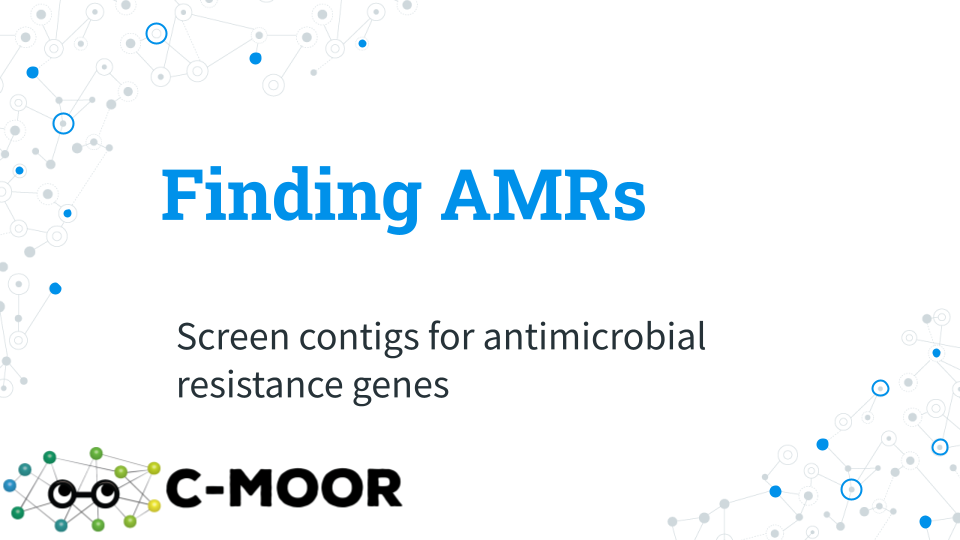
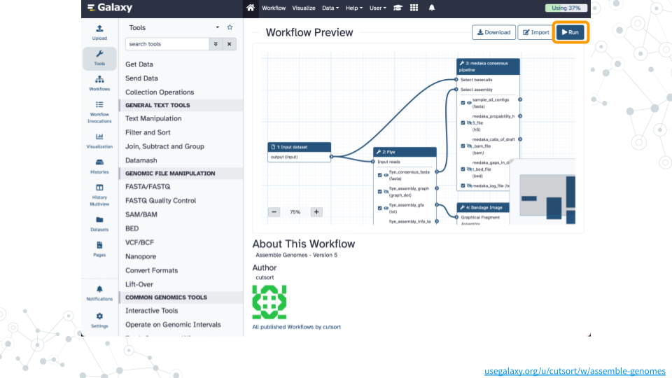

Chapter 6 Finding AMRs
Overview
Introduction
Antimicrobial resistance genes (AMR genes) allow microbes to counteract the effects of antimicrobial drugs used to treat infections. Databases such as the NCBI Pathogen Detection Reference Gene Catalog and the Comprehensive Antibiotic Resistance Database contain thousands of curated resistance genes and help make AMR-related data more widely available. Here we use the ABRicate tool which can mass screen contigs for antimicrobial genes using a variety of databases including the NCBI database. A similar strategy can be used to screen for virulence factors using databases such as the Virulence Factor Database (VFDB).

Activity 1 – Assemble Genomes
Estimated time: 45 min (~30 min computing)
Instructions
1. Run workflow
- Open the Assemble Genomes public workflow
- Click on
Runand thenRun Workflowon thefastp on data 5: Read 1 outputdataset - Wait ~30 minutes as the Flye, Bandage, and medaka jobs are scheduled, run, and complete

Questions
You can refer to this completed history to answer these questions while you wait for your jobs to complete.
| 1A. How many contigs were assembled? |
|---|
| 1B. Why did flye separate these in this way? How does flye decide to group them into this numbers of contigs? |
|---|
Activity 2 – Finding AMRs
Estimated time: 15 min
Instructions
Footnotes
Contributions and Affiliations
- Jennifer Kerr, Notre Dame of Maryland University
- Rosa Alcazar, Clovis Community College
- Frederick Tan, Johns Hopkins University
- Based on “Pathogen detection from (direct Nanopore) sequencing data using Galaxy - Foodborne Edition” (GTN)
Last Revised: September 2024